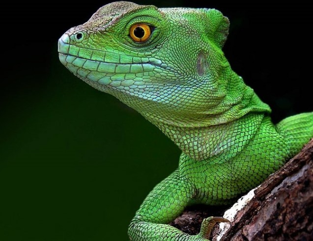

Leopardos são ágeis nadadores e frequentemente carregam suas presas para árvores para evitar que outros carnívoros as roubem. Além disso, suas manchas únicas servem como camuflagem perfeita na vegetação densa.

Coiotes são notáveis por sua adaptabilidade, sendo encontrados em ambientes urbanos e rurais, e até mesmo em desertos. Além disso, são conhecidos por suas vocalizações variadas, que incluem uivos distintivos e até imitações de sons humanos.

Os pandas têm um "polegar" adaptado a partir de um osso do pulso, que os ajuda a segurar os bambus que constituem a maior parte de sua dieta. Além disso, apesar de sua aparência fofa, são excelentes escaladores de árvores.

Os jacarés têm a capacidade de regenerar seus dentes continuamente ao longo da vida, substituindo os danificados. Além disso, podem permanecer submersos por longos períodos, utilizando pequenas aberturas nas narinas para respirar enquanto mantêm o restante do corpo submerso.

As baleias jubarte têm canções complexas que podem durar até 20 minutos e são cantadas pelos machos para atrair parceiras. Além disso, a baleia azul, o maior animal do planeta, consome cerca de 4 toneladas de krill por dia.
